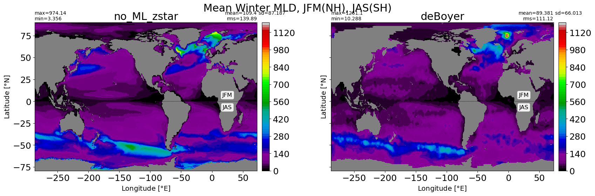
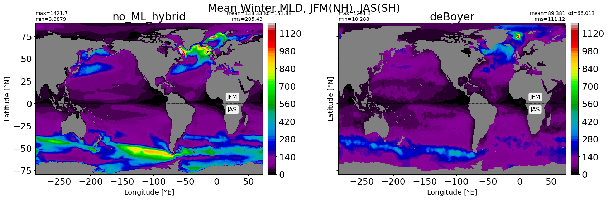
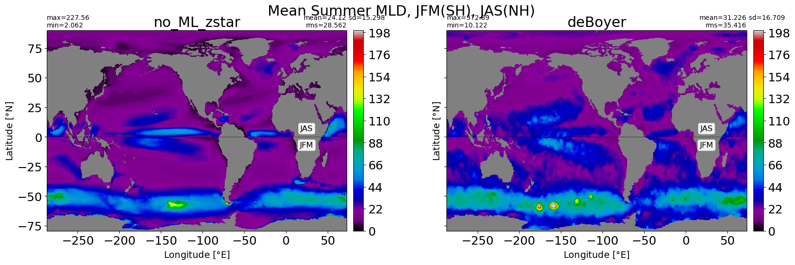
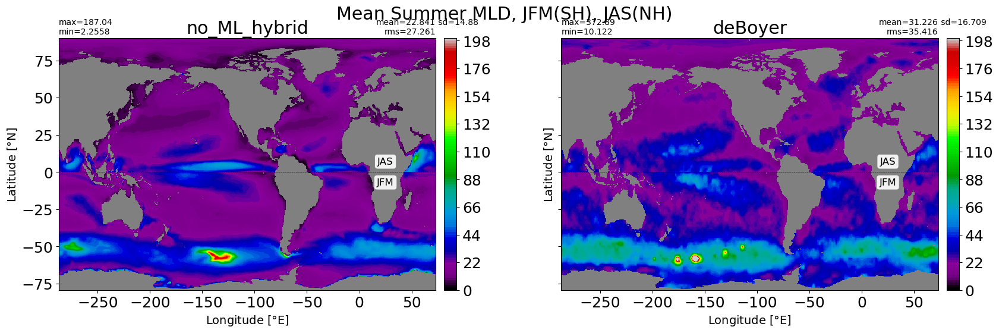
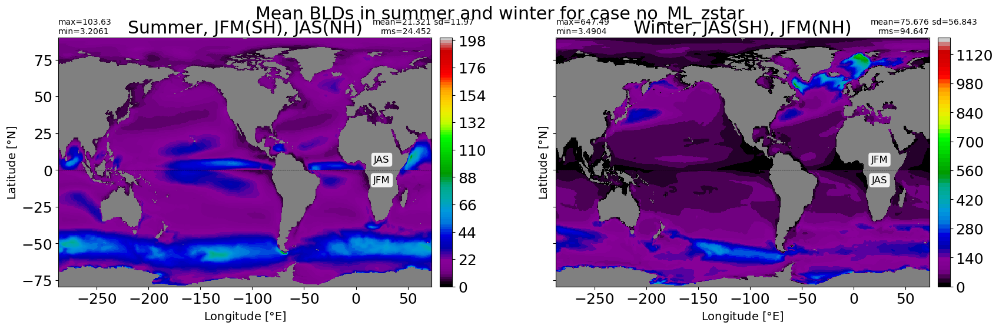
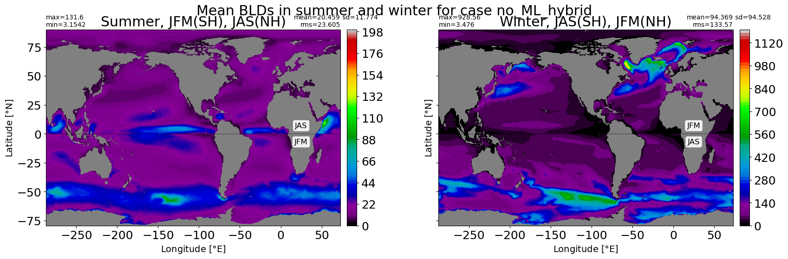

2D Surface Fields#
%%capture
# comment above line to see details about the run(s) displayed
from misc import *
%matplotlib inline
# empty parametrizable cell
cluster_scheduler_address = None
# Parameters
not_casename = "placeholder-casename"
subset_kwargs = {}
Connecting to cluster#
from dask.distributed import Client
if cluster_scheduler_address is None:
pass
else:
client = Client(cluster_scheduler_address)
client
Mixed layer depth#
filepath = '/glade/work/gmarques/cesm/datasets/MLD/deBoyer/deBoyer_MLD_remapped_to_tx06v1.nc'
print('\n Reading climatology from: ', filepath)
mld_obs = xr.open_dataset(filepath)
months = [0,1,2]
obs_JFM = np.ma.masked_invalid(mld_obs.mld.isel(time=months).mean('time').values)
months = [6,7,8]
obs_JAS = np.ma.masked_invalid(mld_obs.mld.isel(time=months).mean('time').values)
obs_winter = obs_JAS.copy(); obs_summer = obs_JAS.copy()
j = np.abs( grd.geolat[:,0] - 0. ).argmin()
obs_winter[j::,:] = obs_JFM[j::,:]
obs_summer[0:j,:] = obs_JFM[0:j,:]
bbox_props = dict(boxstyle="round", fc="w", ec="0.5", alpha=0.9)
def add_labels(ax, nh='JFM', sh='JAS'):
ax.plot([grd.geolon[0,0], grd.geolon[0,-1]], [0,0], 'k--', lw=0.5)
ax.text(25, 7, nh, ha="center", va="center", size=12, bbox=bbox_props)
ax.text(25, -7, sh, ha="center", va="center", size=12, bbox=bbox_props)
Reading climatology from: /glade/work/gmarques/cesm/datasets/MLD/deBoyer/deBoyer_MLD_remapped_to_tx06v1.nc
%matplotlib inline
for path, case, i in zip(ocn_path, casename, range(len(casename))):
ds = xr.open_dataset(path+case+'_MLD_winter.nc')
fig, ax = plt.subplots(nrows=1, ncols=2, figsize=(20,5.5),
sharex=True, sharey=True)
ax1 = ax.flatten()
plt.suptitle('Mean Winter MLD, JFM(NH), JAS(SH)')
# model
control = np.ma.masked_invalid(ds.MLD_winter.values)
xyplot(control, grd.geolon, grd.geolat, grd.area_t,
title=str(label[i]), axis=ax1[0],
clim=(0,1200), nbins=100, colormap=plt.cm.nipy_spectral,
extend='neither')
add_labels(ax1[0])
# obs
xyplot(obs_winter, grd.geolon, grd.geolat, grd.area_t,
title='deBoyer', axis=ax1[1],
clim=(0,1200), nbins=100, colormap=plt.cm.nipy_spectral,
extend='neither')
add_labels(ax1[1])


for path, case, i in zip(ocn_path, casename, range(len(casename))):
ds = xr.open_dataset(path+case+'_MLD_summer.nc')
fig, ax = plt.subplots(nrows=1, ncols=2, figsize=(20,5.5),
sharex=True, sharey=True)
ax1 = ax.flatten()
plt.suptitle('Mean Summer MLD, JFM(SH), JAS(NH)')
# model
control = np.ma.masked_invalid(ds.MLD_summer.values)
xyplot(control, grd.geolon, grd.geolat, grd.area_t,
title=str(label[i]), axis=ax1[0],
clim=(0,200), nbins=100, colormap=plt.cm.nipy_spectral,
extend='neither')
add_labels(ax1[0], sh='JFM', nh='JAS')
# obs
xyplot(obs_summer, grd.geolon, grd.geolat, grd.area_t,
title='deBoyer', axis=ax1[1],
clim=(0,200), nbins=100, colormap=plt.cm.nipy_spectral,
extend='neither')
add_labels(ax1[1], sh='JFM', nh='JAS')


Boundary layer depth#
for path, case, i in zip(ocn_path, casename, range(len(casename))):
ds1 = xr.open_dataset(path+case+'_BLD_summer.nc')
ds2 = xr.open_dataset(path+case+'_BLD_winter.nc')
summer = np.ma.masked_invalid(ds1.BLD_summer.values)
winter = np.ma.masked_invalid(ds2.BLD_winter.values)
fig, ax = plt.subplots(nrows=1, ncols=2, figsize=(20,5.5),
sharex=True, sharey=True)
ax1 = ax.flatten()
plt.suptitle('Mean BLDs in summer and winter for case {}'.format(label[i]))
# summer
xyplot(summer, grd.geolon, grd.geolat, grd.area_t,
title="Summer, JFM(SH), JAS(NH)", axis=ax1[0],
clim=(0,200), nbins=100, colormap=plt.cm.nipy_spectral,
extend='neither')
add_labels(ax1[0], sh='JFM', nh='JAS')
# obs
xyplot(winter, grd.geolon, grd.geolat, grd.area_t,
title='Winter, JAS(SH), JFM(NH)', axis=ax1[1],
clim=(0,1200), nbins=100, colormap=plt.cm.nipy_spectral,
extend='neither')
add_labels(ax1[1])

